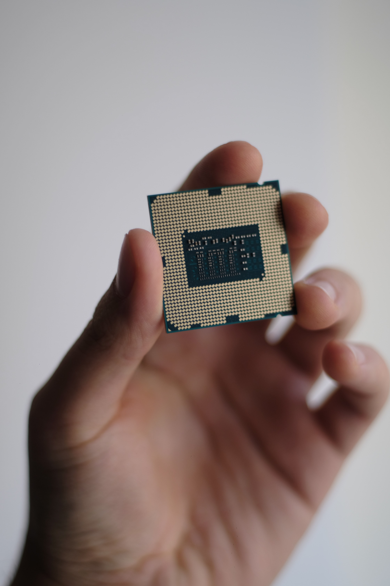
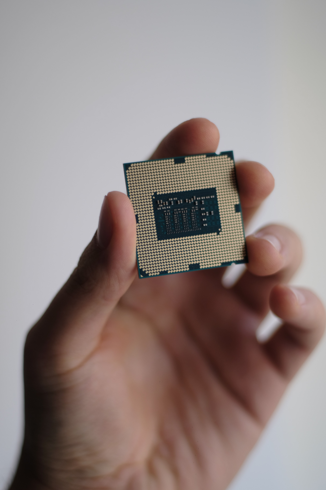

cpu
컴퓨터의 성능을 가늠하고자 할 때 가장 먼저 살펴보게 되는 것이 바로 기본 사양표다. 여기에는 해당 컴퓨터를 구성하고 있는 부품의 항목이 일목요연하게 정리되어 있는데, 가장 상단에는 대부분 ‘CPU’라는 항목이 위치해 있다. 그만큼 컴퓨터에서 CPU는 전반적인 성능을 좌우하는 가장 중요한 부품이라고 할 수 있다. [네이버 지식백과] 컴퓨터 CPU - 0과 1만으로 세상을 바꾼 컴퓨터 의 두뇌

컴퓨터의 성능을 가늠하고자 할 때 가장 먼저 살펴보게 되는 것이 바로 기본 사양표다. 여기에는 해당 컴퓨터를 구성하고 있는 부품의 항목이 일목요연하게 정리되어 있는데, 가장 상단에는 대부분 ‘CPU’라는 항목이 위치해 있다. 그만큼 컴퓨터에서 CPU는 전반적인 성능을 좌우하는 가장 중요한 부품이라고 할 수 있다. [네이버 지식백과] 컴퓨터 CPU - 0과 1만으로 세상을 바꾼 컴퓨터 의 두뇌
